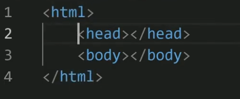

Tags HTML são instruções que informam ao navegador como formatar o texto.
Você pode usar tags para definir itálico, quebras de linha, objetos, bullet points e muito mais.
Essas tags estão presentes no HTML (Hypertext Markup Language) de todas as páginas da internet.
Uma tag HTML deve conter três partes:
- Uma tag de abertura — começando com um símbolo < div >;
- Conteúdo — instruções curtas para exibir o elemento na página "div"
- Uma tag de fechamento — terminando com um símbolo </div>;
Formando as tags como <html>, <head>, e <body> que dizem ao navegador como exibir os elementos.